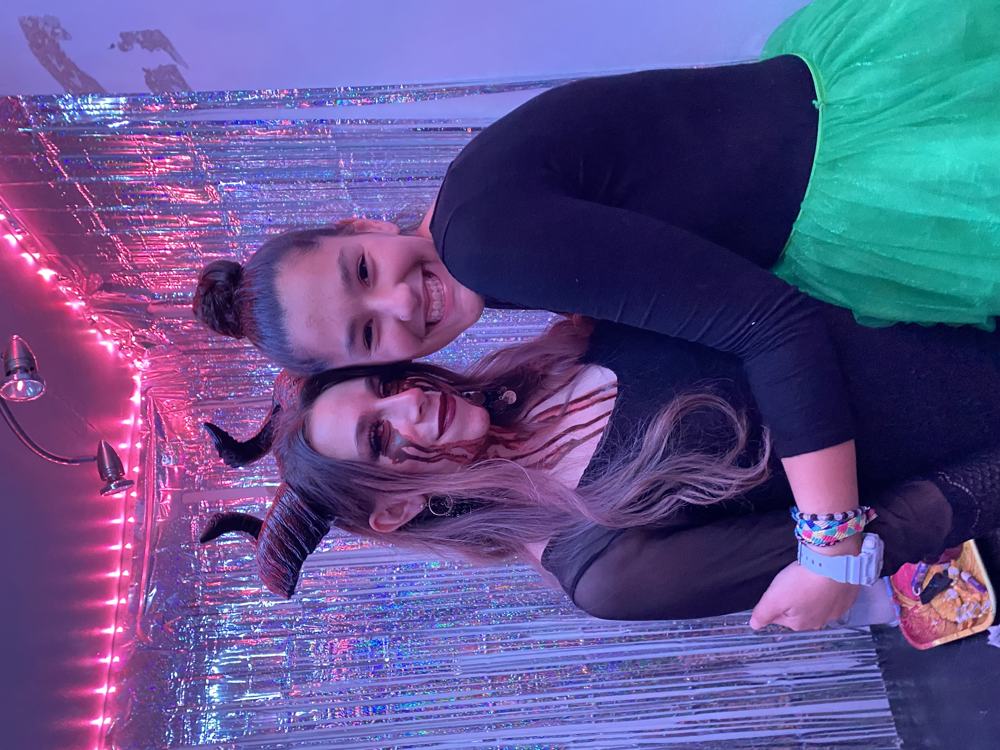
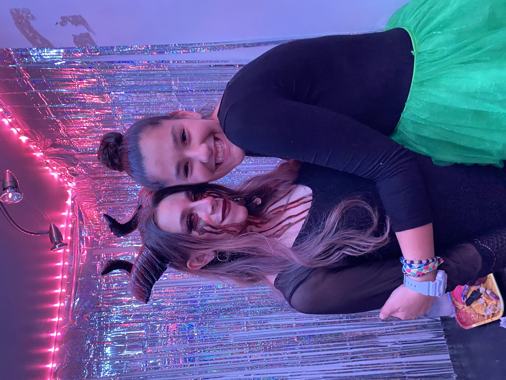
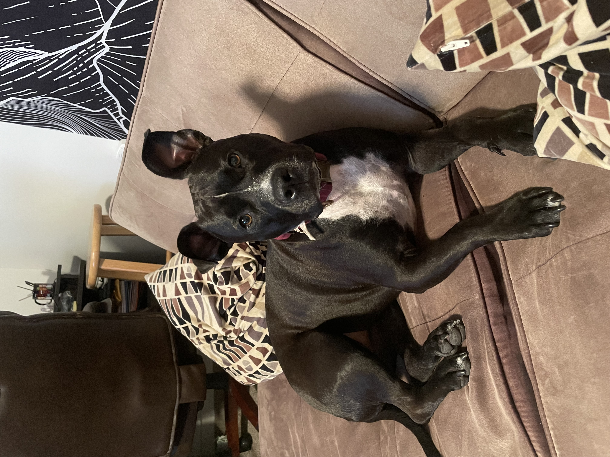
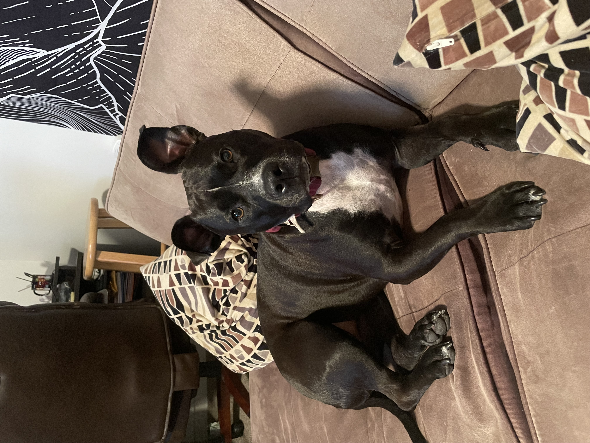
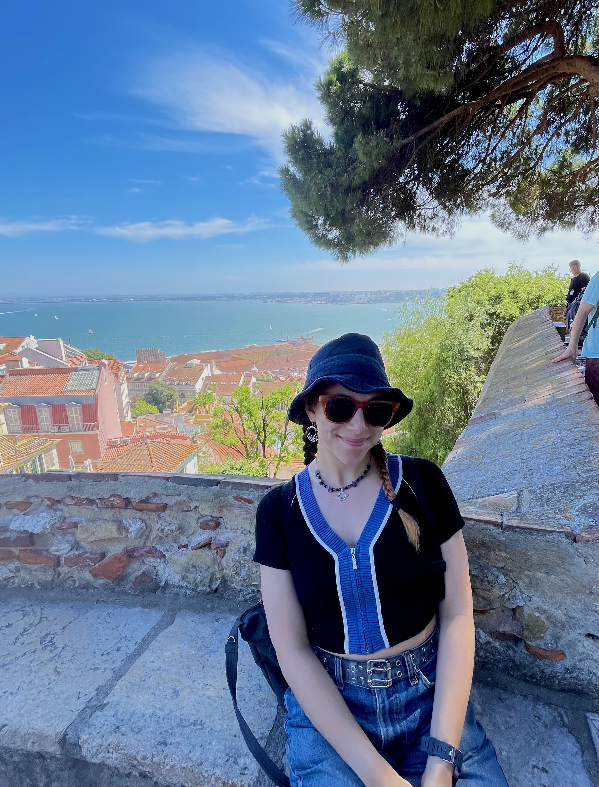
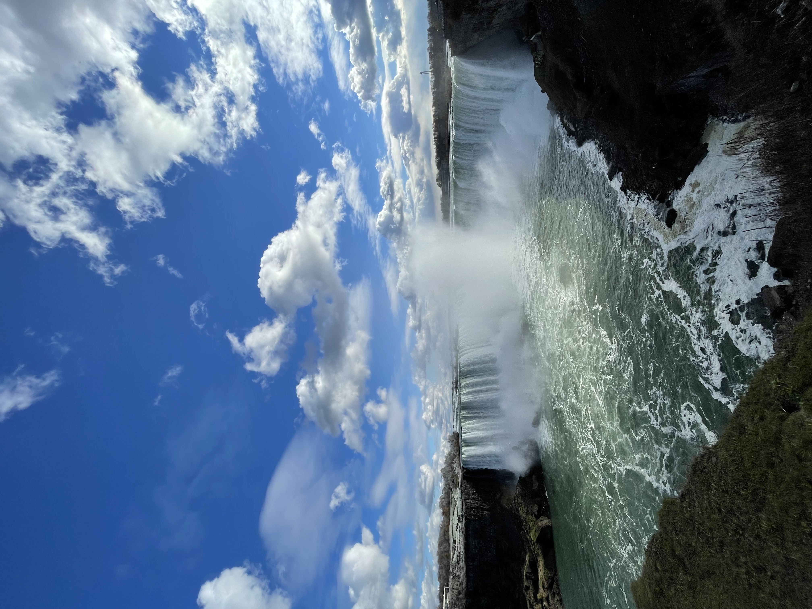
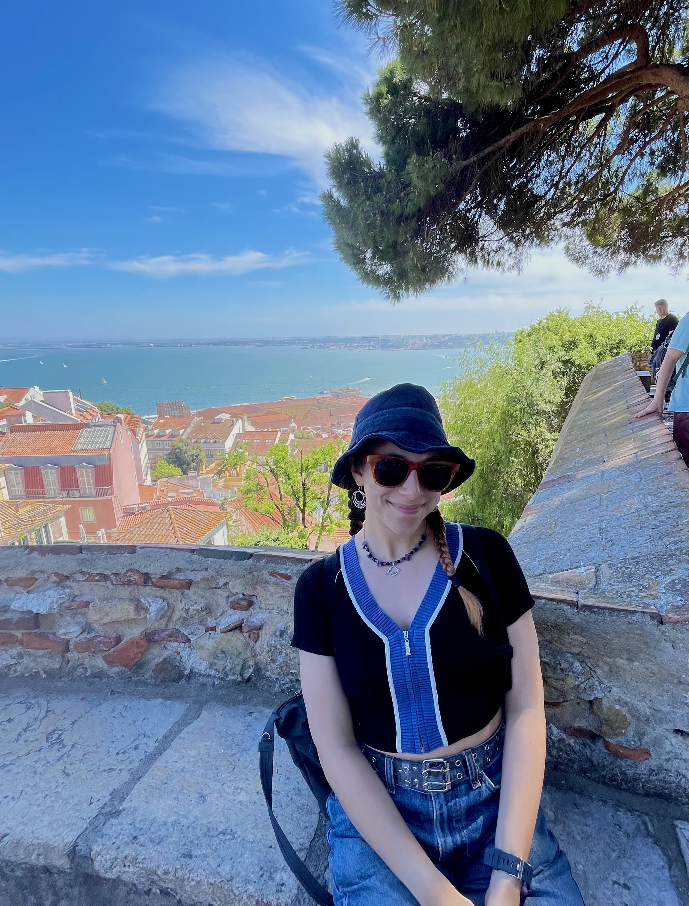
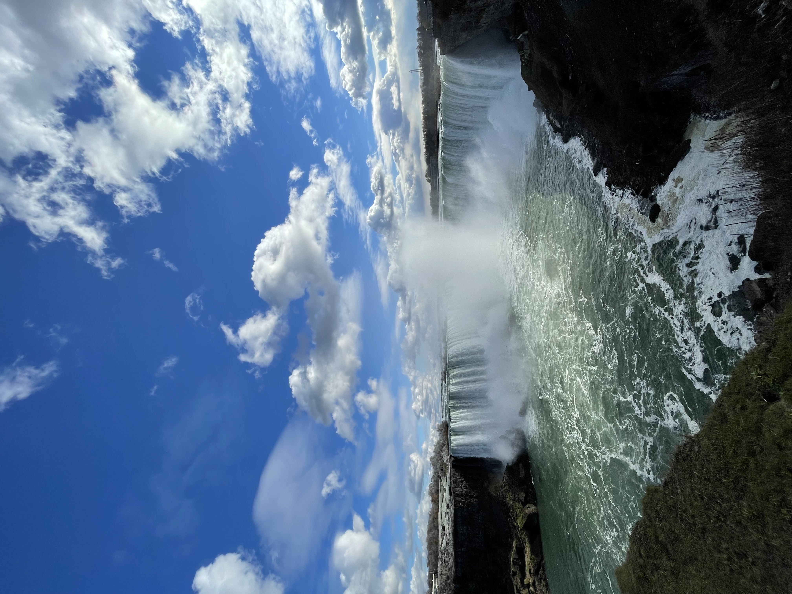

My name is Sarah and I am a undergraduate senior in the Dietrich School of Arts and Sciences majoring in Environmental Science and Public and Professional Writing. I am also minoring in Gender, Sexuality, and Women's Studies and pursuing a certificate in Public Communication of Science and Technology. This semester, I am very excited to work as a UTA for Writing for the Sciences and as a UTA for Communication for Environmental Professionals, two courses I greatly enjoyed last semester. After graduating this spring, I plan on pursuing a masters degree in a related field. I am currently looking at programs in the environmental studies and communications fields in Canada and the Netherlands.
I don't have much personal experience in digital design or coding, but I am very excited to learn and soon see myself as a "girl who codes." While I am primarily a writer who specializes in scientific and journalistic communication, I am looking to add digital composition to my skillset, which will undoubtedly expand my access to different modes of communication. My typical mediums include literary analyses, long-form opinion journalism, and research writing. I've always loved to combine professional and creative elements of writing in order to communicate my thoughts and ideas in a creative and thoughtful manner, which is largely why I enjoy writing for the Pitt News Opinions Desk. I think that this course will certainly provide additional ways for me to communicate issues of interest in a creative and engaging manner.
In the future, I hope to do advocacy work in the field of environmental communications. After my experience this summer in an advocacy program with the FFAC, I would ideally like to write articles or oversee communications for a nonprofit group related to the environmental sector. Some potential fields of interest include factory farming, climate change policy, and sustainable urban planning. These areas connect to my personal interests by sustaining my love of animals, respect for the environment, and personal interest in urban sustainability. I am hoping this course can aid in accomplishing my goals by expanding my knowledge of digital communications and how to best use different modes of digital communication in disemminating information regarding these issues.
In my free time, I like to read, travel, listen to podcasts, go hiking, do yoga, listen to music and curate playlists, and spend time with my pets. I am also a Senior Staff Writer for the Pitt News Opinions Desk, Service Chair for the Phi Sigma Pi honor fraternity, Vice President of the University of Pittsburgh Geology Club, and a Staff Editor and Writer for the Pitt Pulse. Most of my published work is centered on gender and social issues of personal importance. Through my first and third years at Pitt, I served as a Corps Member and Team Leader with PittServes Jumpstart as well.
 

Growing up, my family has alwaysbeen very animal-oriented. My mom is a veterinarian, which has had a significant impact on my upbringing by instilling in myself a deep love for animals and a desire to help and rescue animals in need. Below are some images of my silver tabby Samson, my staffordshire terrier Olive, and several of my family's other pets.
 

I have always loved to travel to different countries, meet new people, and gain unique experiences. Since highschool, I have traveled to Israel, Canada, Mexico, and various parts of Europe. This past summer, I took a Maymester course abroad in Amsterdam, Netherlands. Once the course ended, I traveled to several other countries around Europe, including Portugal and France. Below are some images from my various travels, including Niagara Falls, Amsterdam, Paris, Nice, Lisbon, Funchal, and Tulum.
 



generated by Pitt Fuego
Why make a spark when you can light a fire?